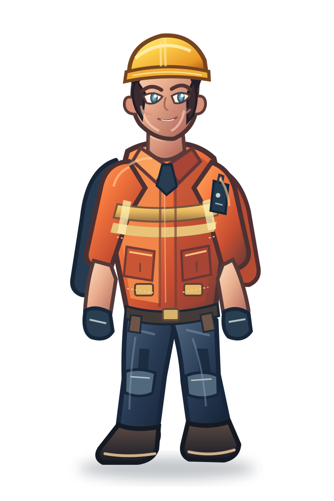

01 · HUMANO
Trabajador
Uniforme industrial · casco · rostro anime · cuerpo completo

Enfoque: rostro más expresivo, anatomía adulta, silueta limpia, uniforme con paneles, costuras, bolsillos, radio, cinturón y botas. Paleta naranja, azul petróleo y amarillo.